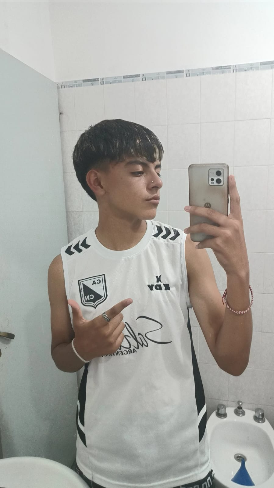

Nombre: Ariel Teragni
Email: teragniariel@gmail.com
Ubicación: Salta, Argentina
Técnico en informática con conocimientos en programación y desarrollo de proyectos con Arduino. Interesado en la automatización
Universidad Catolica de Salta - 2021 - 2026
- Programación en C/C++
- Python básico
- Manejo de Arduino IDE
